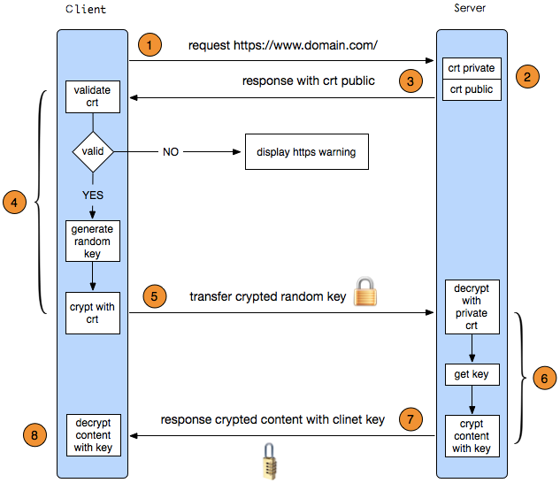

1. HTTPS是什么
HTTPS全称为Hypertext Transfer Protocol over Secure Socket Layer，及以安全为目标的HTTP通道，简单说就是HTTP的安全版本。
HTTPS其实是由两部分组成的：HTTP+TLS/SSL，即HTTP下加入TLS/SSL层，HTTPS的安全基础就是TLS/SSL。服务端和客户端的信息传输都会通过TLS/SSL进行加密，所以传输的数据都是加密之后的数据。
2. 加密算法
1、散列函数 Hash
常见的有 MD5、SHA1、SHA256，该类函数特点是函数单向不可逆、对输入非常敏感、输出长度固定，针对数据的任何修改都会改变散列函数的结果，用于防止信息篡改并验证数据的完整性。
2、对称加密
常见的有 AES-CBC、DES、3DES、AES-GCM等，相同的密钥可以用于信息的加密和解密，掌握密钥才能获取信息，能够防止信息窃听，通信方式是1对1。
3、非对称加密
即常见的 RSA 算法，还包括 ECC、DH 等算法，算法特点是，密钥成对出现，一般称为公钥(公开)和私钥(保密)，公钥加密的信息只能私钥解开，私钥加密的信息只能公钥解开。因此掌握公钥的不同客户端之间不能互相解密信息，只能和掌握私钥的服务器进行加密通信，服务器可以实现1对多的通信，客户端也可以用来验证掌握私钥的服务器身份。
3、Https如何工作

其工作过程大致是：
1、客户端发起HTTPS请求
浏览器里面输入一个HTTPS网址，然后连接到服务端的443端口上。
2、服务端的配置
采用HTTPS协议的服务器必须要有一套数字证书，可以自己制作，也可以向组织申请。区别就是自己颁发的证书需要客户端验证通过才可以继续访问，而使用受信任的公司申请的证书则不会弹出提示页面。
这套证书其实就是一对公钥和私钥，可以这么理解，公钥就是一把锁头，私钥就是这把锁的钥匙，锁头可以给别人对某个东西进行加锁，但是加锁完毕之后，只有持有这把锁的钥匙才可以解锁看到加锁的内容。
采用的就是RSA公钥加密算法来区分证书签名和交换密钥，通过AES算法来加密数据。
3、传送证书
这个证书其实就是公钥，只是包含了很多信息，如证书的颁发机构、过期时间等等。
4、客户端解析证书
这部分工作是由客户端的TLS来完成的，首先会验证公钥是否有效，如颁发机构、过期时间等等，如果发现异常则会弹出一个警告框，提示证书存在问题。如果证书没有问题，那么就生成一个随机值，然后用证书对该随机值进行加密。
5、传送加密信息
这部分传送的是用证书加密后的随机值，目的就是让服务端得到这个随机值，然后客户端和服务端的通信就可以通过这个随机值来进行加密和解密了。
6、服务端解密信息
服务端用私钥解密后，得到了客户端传过来的随机值，至此一个非对称加密的过程结束，看到TLS利用非对称加密实现了身份认证和密钥协商。然后把内容通过该值进行对称加密。
7、传输加密后的信息
这部分是服务端用随机值加密后的信息，可以在客户端被还原。
8、客户端解密信息
客户端用之前生成的随机值解密服务端传送过来的信息，于是获取了解密后的内容，至此一个对称加密的过程结束，看到对称加密是用于对服务器待传送给客户端的数据进行加密用的。整个过程即使第三方监听了数据，也束手无策。